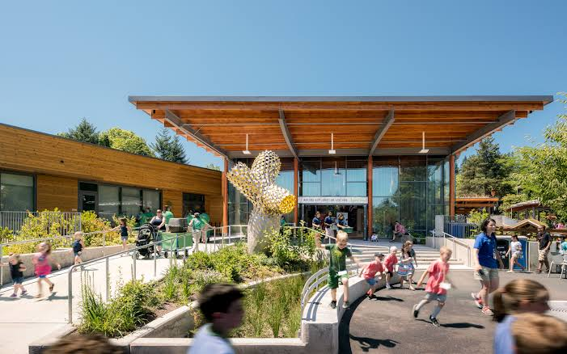
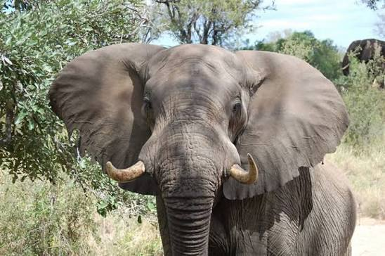
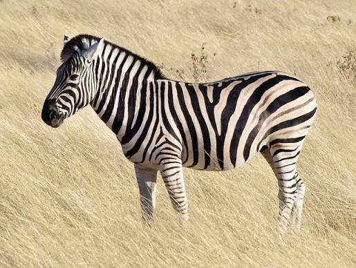
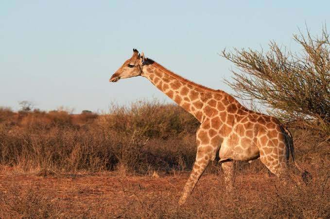

Educational Programmes
Educational activities can help learners and visitors develop knowledge of wildlife, biodiversity, habitats and conservation.
NATIONAL ZOOLOGICAL GARDEN
Information for visitors, learners and conservation supporters.

Educational activities can help learners and visitors develop knowledge of wildlife, biodiversity, habitats and conservation.

Visitors can observe a variety of animals and use the experience to learn more about species and their natural environments.

The garden provides opportunities for visitors to engage with wildlife and develop greater awareness of biodiversity.

Venue and event information can be obtained through the relevant official SANBI channels. Availability and arrangements should be confirmed before booking.
| Area | Website Information |
|---|---|
| Wildlife | Animal and biodiversity information for visitors. |
| Education | Learning and environmental awareness opportunities. |
| Conservation | Information about biodiversity and conservation. |
| Events | Enquire about current activities and venue availability. |